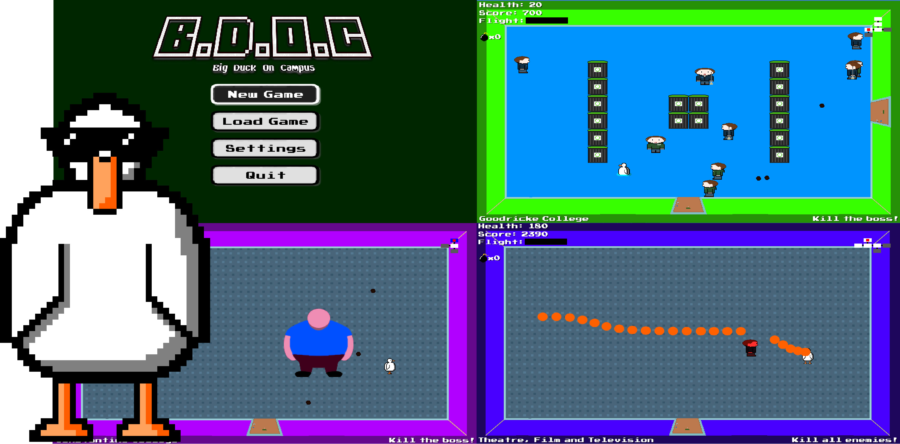

Home
Welcome to the Team Teal Duck website!
For Assessment 3 we took on Big Duck On Campus by Team Muscovy.
Big Duck On Campus
Become the most OP Duck in the history of Duck-kind!
B.D.O.C. is a game that rips-off is inspired by The Binding of Isaac.
Complete each level and gain new abilities in your quest for absolute power.
You can also gain a spiffing pair of sunglasses!
Assessment 3:
Documentation for Assessment 3
Executable game file (.jar)